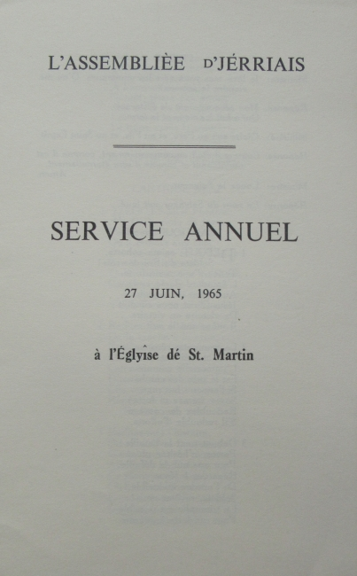

L'Assembliée d'Jèrriais
Lé service annuel à St. Martîn

Au mains 250 personnes, membres et d'autres, lus rêunîtent dans l'eglyise dé St. Martîn, l'27 dé juin, pour iune des grandes occasions d'l'année, iune quand tous peuvent lus rêuni ensemblye pour servi et louangi l'Bouan Dgieu.
Ch'tait bein pliaisant d'aver parmi la congrégation lé Canon J.S. Norman et l'Rév. L. Helleur, deux ministres qu'ont prînts part dans d's autres services Jèrriais.
La beinv'nue

Lé Recteu d'la paraisse, Lé Rév. F. Brackley, fit la beinv'nue à tous en Dgèrnésiais, et auprès annoncit les cantiques et fit les priéthes en Français.
Les leçons
La preunmiéthe, lé 21ème chapitre des Rois au chapitre 5 et les versets 8 au 14, fut liue par la janne Dlle. Audrey Le Feuvre; la deuxième, prinse du 25ième chapitre dé l'Êvangile sélon St. Matthieu, lé chapitre 25 et les versets 14 au 29, fut liue par lé Sieur P.C. Le Ruez, ches deux leçons ayant 'té traduites par deux membres fidèles dé L'Assembliée.
Quat'es bornes
Ch'tait la preunmié fais qu'un Président fîsse lé sermon, et l'Député Quérée prînt san texte du 28ième verset du 22ième chapitre des Proverbes et en Jèrriais les mots sont "Tu n'dêpliaich'chas pas la borne ancienne."
En disant qué L'Assembliée avait 'té formée pour prêserver et perpétuer la vielle langue Jèrriaise, lé Député explyitchi la raison d'san chouaix comme texte, pour prêserver tchique chose du vièr temps. Eune borne servait pour montrer la limite des bâtisses, tèrres, etc., et l'tèrme 'tait mentionné quatre fais dans l'Ancien Testament. La Biblye, lé trêsor dé bein des Chrêtiens, dont nou-s-a r'chu lé genre dé vivre à travers les siècl'yes, des hommes avaient êprouver à l'anéanti, mais oulle a survêtchu, et à bein près tous en possède iune, et pour bein des gens ch'est un livre remplyi dé forche et èrdgéthithon, mais malheutheus'ment pour d'autres oulle est rar'ment liue et est rempliaichie par des choses mains împortantes. En prennant comme examplyes des deux leçons Moussieu Quérée dit qué la preunmié borne 'tait dé n'dêpliaitchi pas la pathole dé Dieu.
La deuxième borne la priéthe. quand nou-s-a les pensées troublyées et quand nou-s-est dans la jouaie, en touos temps i'n'faut janmais oublier la priéthe, même avec lé travas.
La traisième borne - lé lieu d'tchulte. J'avons ieu eune importante ordonnance - un jour sus sept pour servi et louangi l'bouan Dgieu. Nos anchêtres avaient la fouai, la vie spirituelle avait eune pliaiche toute spéciale pour ieux, et i' fallait continuer chutte ordonnance.
La quatrième borne - la pus importante - la Crouaix du calvaithe, et i'n' fallait pas la rempliaichi. Nou la vait erpréthentée sus bein des sens, dans l's arts et dans l'domaine spirituel, dans la Grâce, l'Amour et l'Pardon. Ch'est un challenge pour nous Chrêtiens dé souôtnin l'bein, mais l'Député sé d'mandit si les Jèrriais 'taient concernés assez à ch't êgard. En finissant i' nos dit qu'il espéthait allaient erfliéchi ses mots ensemblye, et tâchi d'faithe lus possiblye qué les bouannes choses piaîssent nos dominer, et d'garder touos nous Jèrriais ensemblye.
Les cantiques
Duthant l'sèrvice les cantiques "Debout Sainte Cohorte", "Redites-moi l'Histoire", "Le Tout-Puissant est mon Berger", "Jésus-Christ est ma sagesse" et "Celui qui sur un bois maudit" en Français et "Bénis sont les Chrêtchiens" en Jèrriais par lé Sieur G. Le Feuvre fudrent chantés d'bouan tchoeu par tout l'monde, lé Sieur P. D. Harris organiste de l'Eglyise étant à l'orgue.
1965
Viyiz étout:
{kind=link}